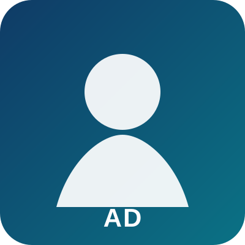
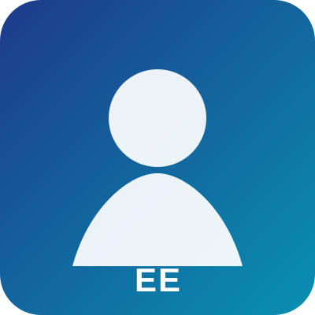
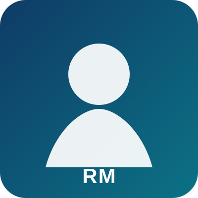
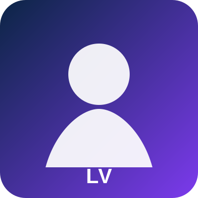

Sami Hlioui
Professeur des universités
CY Cergy Paris UniversitéResponsable de l’équipe TeSE

Mohamed Gabsi
Professeur des universités
ENS Paris-SaclayMachines synchrones à excitation hybride
Lahoucine Id-Khajine
Professeur des universités
CY Cergy Paris UniversitéSimulation temps réel et jumeaux numériques

Olivier de la Barrière
Chargé de recherche
CNAMChaînes de conversion résilientes

Anatole Desreveaux
Maître de conférences
CNAMGestion énergétique et mobilité hydrogène

Elhoussin Elbouchikhi
Maître de conférences HDR
ENS RennesÉnergies renouvelables et systèmes d’énergie

Emmanuel Hoang
Professeur agrégé
ENS Paris-SaclayActionneurs électriques et expérimentation
Sandrine Le Ballois
Maître de conférences HDR
ENS Paris-SaclayMéthodes de conception et formation

Rita Mbayed
Maître de conférences
CNAMModélisation et commande

Ali Mousmi
Maître de conférences
CY Cergy Paris UniversitéCommande des systèmes d’énergie
Javier Ojeda
Maître de conférences HDR
CNAMTopologies de machines et traction fractionnée

Lionel Vido
Maître de conférences
ENS Paris-SaclayBancs expérimentaux et caractérisation